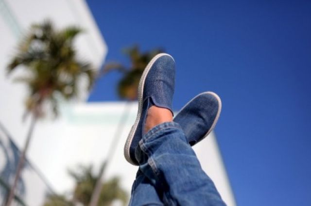

Летняя обувь
Летний сезон диктует свои правила в выборе обуви и ее ношении. Важен взгляд как со стороны ортопедов, чтобы сохранить ноги здоровыми, так и со стороны стилистов. Последние смогут подсказать, с какой одеждой носить определенный тип обуви и какую тенденцию соблюдать, чтобы не оказаться на периферии модной жизни. Специалист в мире моды утверждает, что так называемые «летние сапоги» с кружевами или с перфорацией утратили свою актуальность, хотя и полюбились модницам несколько лет назад. Не стоит выбирать также сандалии-гладиаторы. Что касается модных цветов и оттенков в летнем сезоне-2014, то в этом вопросе выбор огромный: стильной будет смотреться обувь пастельных оттенков (от монохромной розовой палитры до нежного баклажанного цвета), с серебряным и металлическим блеском. Актуальной останется классика – обувь белого цвета. Напомним, что белый цвет придает образу радостные нотки и чистоту. «Если хочется совместить в одной паре обуви практичность и красоту, то выбирайте удобные босоножки или шлепки на низком ходу, – советует Даниил Грачев. – Обувь в спортивном стиле сейчас актуальна, а она сама по себе крайне удобна. Не думаю, что стоит выбирать шпильки или шпильку с платформой».